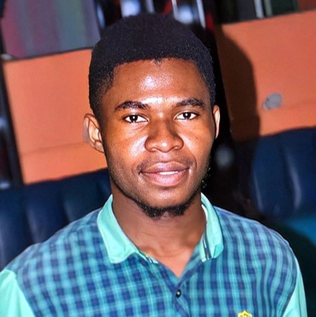

MOUKOLAUD NIMI Rollsy
Etudiant en génie numérique
 rollsynimi1@gmail.com
rollsynimi1@gmail.com
 Sangmélima-Cameroun
Sangmélima-Cameroun
 +237 653642055
+237 653642055
Profil
Actuellement étudiant en troisième année dans une école
d’ingénierie informatique, où je poursuis une formation
en génie des systèmes numériques ; j’ai une certaine
connaissance sur la sécurité des réseaux et des
systèmes d’informations. Assez motivé et appliqué, je
crois que ces qualités font de moi une personne capable
de relever les défis
Diplômes et Formations
Baccaleauréat scientifique, série C
Lycée justin victor Sathoud
Dolisie, Rép. Congo
2016-2019
Lycée justin victor Sathoud
Dolisie, Rép. Congo
2016-2019
Certificat en test d'intrusion web
Openclassroom
Online
(sept. 2022)
Openclassroom
Online
(sept. 2022)
Licence en génie des systèmes numériques
E.S.I.G.N/ U.I.E.C.C
Sangmélima-Cameroun
Actuellement
E.S.I.G.N/ U.I.E.C.C
Sangmélima-Cameroun
Actuellement
Expériences professionnelles
Stagiaire Technicien réseaux (SCB CAMEROUN), (Sangmélima)
(Nov. 2021 – Déc. 2021)
- observer et identifier les différents composants du système réseau
- configurer les équipements d’interconnexion.
Chef de projet/projet de création d’un
site d’investissement (ESIGN), (Sangmélima)
(Jan. 2022 – Avr. 2022)
- organiser et conduire le projet de bout en bout
- superviser les différentes étapes de l’ouvrage
- rendre compte de l’avancement du projet au maitre d’ouvrage.
Competences
html, css, Javascript
PHP, MySQL, Java
MongoDB, NodeJs, Oracle
Photoshop, Illustrator, Adobe XD/UI
Langues
Français
Anglais
Réseaux sociaux
 facebook.com/rollcy.moukolaudnimi.9
facebook.com/rollcy.moukolaudnimi.9
 linkedin.com/in/rollsy-épipi-lass/
linkedin.com/in/rollsy-épipi-lass/
 rollsyedvy
rollsyedvy
 https://twitter.com/Rollsyedvy
https://twitter.com/Rollsyedvy
Centres d'intérêt
Sport
Naviguer sur Internet
Lecture
Ecriture